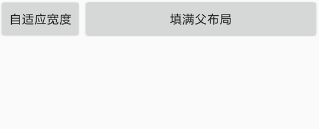
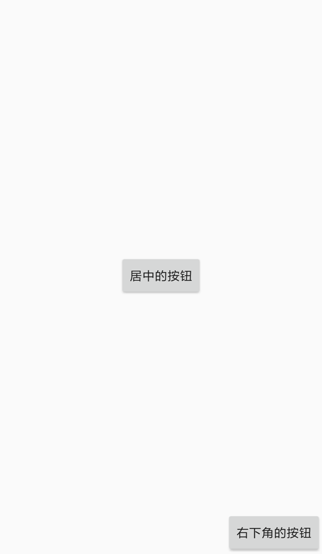

基础布局与控件
基础布局与控件
本节将介绍所有View共有的属性、方法，以及一些基础控件和基础布局。
视图: View
控件和布局都属于视图(View)。在这个章节中将介绍所有控件和布局的共有的属性和函数。例如属性背景，宽高等(所有控件和布局都能设置背景和宽高)，函数click()设置视图(View)被点击时执行的动作。
attr(name, value)
name{string} 属性名称value{string} 属性的值
设置属性的值。属性指定是View在xml中的属性。例如可以通过语句attr("text", "文本")来设置文本控件的文本值。
"ui";
$ui.layout(
<frame>
<text id="example" text="Hello"/>
</frame>
);
// 5秒后执行
$ui.post(() => {
// 修改文本
$ui.example.attr("text", "Hello, Auto.js UI");
// 修改背景
$ui.example.attr("bg", "#ff00ff");
// 修改高度
$ui.example.attr("h", "500dp");
}, 5000);
注意
并不是所有属性都能在js代码设置，有一些属性只能在布局创建时设置，例如style属性；还有一些属性虽然能在代码中设置，但是还没支持。明确不支持的属性在调用attr()时会抛出异常。
attr(name)
name{string} 属性名称- 返回 {string}
获取属性的值。
"ui";
$ui.layout(
<frame>
<text id="example" text="1"/>
</frame>
);
plusOne();
function plusOne() {
// 获取文本
let text = $ui.example.attr("text");
// 解析为数字
let num = parseInt(text);
// 数字加1
num++;
// 设置文本
$ui.example.attr("text", String(num));
// 1秒后继续
$ui.post(plusOne, 1000);
}
注意
通过attr()方法获取的是通过attr()方法或xml属性设置的值，不能用于获取用户输入而改变等的值，因此更建议用控件自身的方法，比如getText()来获取。
w
View的宽度，是属性width的缩写形式。可以设置的值为*,
auto和具体数值。其中*表示宽度尽量填满父布局，而auto表示宽度将根据View的内容自动调整(自适应宽度)。例如：
"ui";
ui.layout(
<horizontal>
<button w="auto" text="自适应宽度"/>
<button w="*" text="填满父布局"/>
</horizontal>
);
在这个例子中，第一个按钮为自适应宽度，第二个按钮为填满父布局，显示效果为：

如果不设置该属性，则不同的控件和布局有不同的默认宽度，大多数为auto。
宽度属性也可以指定一个具体数值。例如w="20"，w="20px"等。不加单位的情况下默认单位为dp，其他单位包括px(像素),
mm(毫米), in(英寸)。有关尺寸单位的更多内容，参见尺寸的单位: Dimension。
"ui";
ui.layout(
<horizontal>
<button w="200" text="宽度200dp"/>
<button w="100" text="宽度100dp"/>
</horizontal>
);
h
View的高度，是属性height的缩写形式。可以设置的值为*,
auto和具体数值。其中*表示宽度尽量填满父布局，而auto表示宽度将根据View的内容自动调整(自适应宽度)。
如果不设置该属性，则不同的控件和布局有不同的默认高度，大多数为auto。
宽度属性也可以指定一个具体数值。例如h="20"，h="20px"等。不加单位的情况下默认单位为dp，其他单位包括px(像素),
mm(毫米), in(英寸)。有关尺寸单位的更多内容，参见尺寸的单位: Dimension。
id
View的id，用来区分一个界面下的不同控件和布局，一个界面的id在同一个界面下通常是唯一的，也就是一般不存在两个View有相同的id。id属性也是连接xml布局和JavaScript代码的桥梁，在代码中可以通过一个View的id来获取到这个View，并对他进行操作(设置点击动作、设置属性、获取属性等)。例如：
"ui";
ui.layout(
<frame>
<button id="ok" text="确定"/>
</frame>
);
//通过ui.ok获取到按钮控件
toast(ui.ok.getText().toString());
这个例子中有一个按钮控件"确定"，id属性为"ok"，那么我们可以在代码中使用ui.ok来获取他，再通过getText()函数获取到这个按钮控件的文本内容。
另外这个例子中使用帧布局(frame)是因为，我们只有一个控件，因此用于最简单的布局帧布局。
gravity
View的"重力"。用于决定View的内容相对于View的位置，可以设置的值为:
left靠左right靠右top靠顶部bottom靠底部center居中center_vertical垂直居中center_horizontal水平居中
例如对于一个按钮控件，gravity="right"会使其中的文本内容靠右显示。例如：
"ui";
ui.layout(
<frame>
<button gravity="right" w="*" h="auto" text="靠右的文字"/>
</frame>
);
显示效果为:

这些属性是可以组合的，例如gravity="right|bottom"的View他的内容会在右下角。
layout_gravity
View在布局中的"重力"，用于决定View本身在他的父布局的位置，可以设置的值和gravity属性相同。注意把这个属性和gravity属性区分开来。
"ui";
ui.layout(
<frame w="*" h="*">
<button layout_gravity="center" w="auto" h="auto" text="居中的按钮"/>
<button layout_gravity="right|bottom" w="auto" h="auto" text="右下角的按钮"/>
</frame>
);
在这个例子中，我们让帧布局(frame)的大小占满整个屏幕，通过给第一个按钮设置属性layout_gravity="center"来使得按钮在帧布局中居中，通过给第二个按钮设置属性layout_gravity="right|bottom"使得他在帧布局中位于右下角。效果如图：

要注意的是，layout_gravity的属性不一定总是生效的，具体取决于布局的类别。例如不能让水平布局中的第一个子控件靠底部显示(否则和水平布局本身相违背)。
margin
margin为View和其他View的间距，即外边距。margin属性包括四个值:
marginLeft左外边距marginRight右外边距marginTop上外边距marginBottom下外边距
而margin属性本身的值可以有三种格式:
margin="marginAll"指定各个外边距都是该值。例如margin="10"表示左右上下边距都是10dp。margin="marginLeft marginTop marginRight marginBottom"分别指定各个外边距。例如margin="10 20 30 40"表示左边距为10dp, 上边距为20dp, 右边距为30dp, 下边距为40dpmargin="marginHorizontal marginVertical"指定水平外边距和垂直外边距。例如margin="10 20"表示左右边距为10dp, 上下边距为20dp。
用一个例子来具体理解外边距的含义：
"ui";
ui.layout(
<horizontal>
<button margin="30" text="距离四周30"/>
<button text="普通的按钮"/>
</horizontal>
);
第一个按钮的margin属性指定了他的边距为30dp, 也就是他与水平布局以及第二个按钮的间距都是30dp, 其显示效果如图:
如果把margin="30"改成margin="10 40"那么第一个按钮的左右间距为10dp,
上下间距为40dp, 效果如图:

有关margin属性的单位，参见尺寸的单位: Dimension。
marginLeft
View的左外边距。如果该属性和margin属性指定的值冲突，则在后面的属性生效，前面的属性无效，例如margin="20" marginLeft="10"的左外边距为10dp，其他外边距为20dp。
"ui";
ui.layout(
<horizontal>
<button marginLeft="50" text="距离左边50"/>
<button text="普通的按钮"/>
</horizontal>
);
第一个按钮指定了左外边距为50dp，则他和他的父布局水平布局(horizontal)的左边的间距为50dp, 效果如图：

marginRight
View的右外边距。如果该属性和margin属性指定的值冲突，则在后面的属性生效，前面的属性无效。
marginTop
View的上外边距。如果该属性和margin属性指定的值冲突，则在后面的属性生效，前面的属性无效。
marginBottom
View的下外边距。如果该属性和margin属性指定的值冲突，则在后面的属性生效，前面的属性无效。
padding
View和他的自身内容的间距，也就是内边距。注意和margin属性区分开来，margin属性是View之间的间距，而padding是View和他自身内容的间距。举个例子，一个文本控件的padding也即文本控件的边缘和他的文本内容的间距，paddingLeft即文本控件的左边和他的文本内容的间距。
padding属性的值同样有三种格式：
padding="paddingAll"指定各个内边距都是该值。例如padding="10"表示左右上下内边距都是10dp。padding="paddingLeft paddingTop paddingRight paddingBottom"分别指定各个内边距。例如padding="10 20 30 40"表示左内边距为10dp, 上内边距为20dp, 右内边距为30dp, 下内边距为40dppadding="paddingHorizontal paddingVertical"指定水平内边距和垂直内边距。例如padding="10 20"表示左右内边距为10dp, 上下内边距为20dp。
用一个例子来具体理解内边距的含义：
"ui";
ui.layout(
<frame w="*" h="*" gravity="center">
<text padding="10 20 30 40" bg="#ff0000" w="auto" h="auto" text="HelloWorld"/>
</frame>
);
这个例子是一个居中的按钮(通过父布局的gravity="center"属性设置)，背景色为红色(bg="#ff0000")，文本内容为"HelloWorld"，左边距为10dp，上边距为20dp，下边距为30dp，右边距为40dp，其显示效果如图：
paddingLeft
View的左内边距。如果该属性和padding属性指定的值冲突，则在后面的属性生效，前面的属性无效。
paddingRight
View的右内边距。如果该属性和padding属性指定的值冲突，则在后面的属性生效，前面的属性无效。
paddingTop
View的上内边距。如果该属性和padding属性指定的值冲突，则在后面的属性生效，前面的属性无效。
paddingBottom
View的下内边距。如果该属性和padding属性指定的值冲突，则在后面的属性生效，前面的属性无效。
bg
View的背景。其值可以是一个链接或路径指向的图片，或者RGB格式的颜色，或者其他背景。具体参见Drawables。
例如，bg="#00ff00"设置背景为绿色，bg="file:///sdcard/1.png"设置背景为图片"1.png"，bg="?attr/selectableItemBackground"设置背景为点击时出现的波纹效果(可能需要同时设置clickable="true"才生效)。
alpha
View的透明度，其值是一个0~1之间的小数，0表示完全透明，1表示完全不透明。例如alpha="0.5"表示半透明。
foreground
View的前景。前景即在一个View的内容上显示的内容，可能会覆盖掉View本身的内容。其值和属性bg的值类似。
minHeight
View的最小高度。该值不总是生效的，取决于其父布局是否有足够的空间容纳。
例：<text height="auto" minHeight="50"/>
有关该属性的单位，参见尺寸的单位: Dimension。
minWidth
View的最小宽度。该值不总是生效的，取决于其父布局是否有足够的空间容纳。
例：<input width="auto" minWidth="50"/>
有关该属性的单位，参见尺寸的单位: Dimension。
visibility
View的可见性，该属性可以决定View是否显示出来。其值可以为：
gone不可见。visible可见。默认情况下View都是可见的。invisible不可见，但仍然占用位置。
rotation
View的旋转角度。通过该属性可以让这个View顺时针旋转一定的角度。例如rotation="90"可以让他顺时针旋转90度。
如果要设置旋转中心，可以通过transformPivotX,
transformPivotY属性设置。默认的旋转中心为View的中心。
transformPivotX
View的变换中心坐标x。用于View的旋转、放缩等变换的中心坐标。例如transformPivotX="10"。
该坐标的坐标系以View的左上角为原点。也就是x值为变换中心到View的左边的距离。
有关该属性的单位，参见尺寸的单位: Dimension。
transformPivotY
View的变换中心坐标y。用于View的旋转、放缩等变换的中心坐标。例如transformPivotY="10"。
该坐标的坐标系以View的左上角为原点。也就是y值为变换中心到View的上边的距离。
有关该属性的单位，参见尺寸的单位: Dimension。
style
设置View的样式。不同控件有不同的可选的内置样式。具体参见各个控件的说明。
需要注意的是，style属性只支持安卓5.1及其以上。
事件: click
当用户点击时会触发该事件。
"ui";
$ui.layout(
<vertical padding="16">
<button id="click_me" text="点我" w="auto"/>
</vertical>
);
$ui.click_me.on("click", () => {
toast("我被点啦");
});
事件: long_click
- event {object} 事件，字段有：
consumed{boolean} 设置此事件是否被消费view{View} 此事件对应的View
当用户长按时会触发该事件。
"ui";
$ui.layout(
<vertical padding="16">
<button id="click_me" text="点我" w="auto"/>
</vertical>
);
$ui.click_me.on("long_click", (event) => {
toast("我被长按啦");
// 消费事件
event.consumed = true;
});
事件：check
checked{boolean} 是否被勾选view{View} 当前事件的View
当用户勾选/取消勾选选项框时会触发该事件，Switch,
checkbox,
radio等控件才有该事件。
"ui";
$ui.layout(
<vertical padding="16">
<checkbox id="cb1" text="复选框"/>
</vertical>
);
$ui.cb1.on("check", (checked) => {
if (checked) {
toast("被勾选了");
} else {
toast("被取消勾选了");
}
});
文本控件: text
参见Android TextView。
文本控件用于显示文本，可以控制文本的字体大小，字体颜色，字体等。
以下介绍该控件的主要属性和方法，如果要查看他的所有属性和方法，请阅读TextView。
text
设置文本的内容。例如text="一段文本"。
textColor
设置字体的颜色，可以是RGB格式的颜色(例如#ff00ff)，或者颜色名称(例如red, green等)，具体参见颜色。
示例,
红色字体：<text text="红色字体" textColor="red"/>
textSize
设置字体的大小，单位一般是sp。按照Material Design的规范，正文字体大小为14sp，标题字体大小为18sp，次标题为16sp。
示例，超大字体:
<text text="超大字体" textSize="40sp"/>
textStyle
设置字体的样式，比如斜体、粗体等。可选的值为：
- bold 加粗字体
- italic 斜体
- normal 正常字体
可以用或("|")把他们组合起来，比如粗斜体为"bold|italic"。
例如，粗体：`
lines
设置文本控件的行数。即使文本内容没有达到设置的行数，控件也会留出相应的宽度来显示空白行；如果文本内容超出了设置的行数，则超出的部分不会显示。
另外在xml中是不能设置多行文本的，要在代码中设置。例如:
"ui";
ui.layout(
<vertical>
<text id="myText" line="3">
</vertical>
)
//通过\n换行
ui.myText.setText("第一行\n第二行\n第三行\n第四行");
maxLines
设置文本控件的最大行数。
typeface
设置字体。可选的值为：
normal正常字体sans衬线字体serif非衬线字体monospace等宽字体
示例，等宽字体:
<text text="等宽字体" typeface="monospace"/>
ellipsize
设置文本的省略号位置。文本的省略号会在文本内容超出文本控件时显示。可选的值为：
end在文本末尾显示省略号marquee跑马灯效果，文本将滚动显示middle在文本中间显示省略号none不显示省略号start在文本开头显示省略号
ems
当设置该属性后,TextView显示的字符长度（单位是em）,超出的部分将不显示，或者根据ellipsize属性的设置显示省略号。
例如，限制文本最长为5em: `
autoLink
控制是否自动找到url和电子邮件地址等链接，并转换为可点击的链接。默认值为“none”。
设置该值可以让文本中的链接、电话等变成可点击状态。
可选的值为以下的值以其通过或("|")的组合：
all匹配所有连接、邮件、地址、电话email匹配电子邮件地址map匹配地图地址none不匹配 (默认)phone匹配电话号码web匹配URL地址
示例：<text autoLink="web|phone" text="百度: http://www.baidu.com 电信电话: 10000"/>
按钮控件: button
参见Android Button。
按钮控件是一个特殊的文本控件，因此所有文本控件的函数的属性都适用于按钮控件。
除此之外，按钮控件有一些内置的样式，通过style属性设置，包括：
- Widget.AppCompat.Button.Colored 带颜色的按钮
- Widget.AppCompat.Button.Borderless 无边框按钮
- Widget.AppCompat.Button.Borderless.Colored 带颜色的无边框按钮
这些样式的具体效果参见"示例/界面控件/按钮控件.js"。
例如：<button style="Widget.AppCompat.Button.Colored" text="漂亮的按钮"/>
输入框控件: input
参见Android EditText。
输入框控件也是一个特殊的文本控件，因此所有文本控件的函数的属性和函数都适用于按钮控件。输入框控件有自己的属性和函数，要查看所有这些内容，阅读EditText。
对于一个输入框控件，我们可以通过text属性设置他的内容，通过lines属性指定输入框的行数；在代码中通过getText()函数获取输入的内容。例如：
"ui";
ui.layout(
<vertical padding="16">
<text textSize="16sp" textColor="black" text="请输入姓名"/>
<input id="name" text="小明"/>
<button id="ok" text="确定"/>
</vertical>
);
//指定确定按钮点击时要执行的动作
ui.ok.click(function(){
//通过getText()获取输入的内容
var name = ui.name.getText().toString();
toast(name + "您好!");
});
除此之外，输入框控件有另外一些主要属性(虽然这些属性对于文本控件也是可用的但一般只用于输入框控件)：
hint
输入提示。这个提示会在输入框为空的时候显示出来。
上面图片效果的代码为：
"ui";
ui.layout(
<vertical>
<input hint="请输入姓名"/>
</vertical>
)
textColorHint
指定输入提示的字体颜色。
textSizeHint
指定输入提示的字体大小。
inputType
指定输入框可以输入的文本类型。可选的值为以下值及其用"|"的组合:
date用于输入日期。datetime用于输入日期和时间。none没有内容类型。此输入框不可编辑。number仅可输入数字。numberDecimal可以与number和它的其他选项组合，以允许输入十进制数(包括小数)。numberPassword仅可输入数字密码。numberSigned可以与number和它的其他选项组合，以允许输入有符号的数。phone用于输入一个电话号码。text只是普通文本。textAutoComplete可以与text和它的其他选项结合, 以指定此字段将做自己的自动完成, 并适当地与输入法交互。textAutoCorrect可以与text和它的其他选项结合, 以请求自动文本输入纠错。textCapCharacters可以与text和它的其他选项结合, 以请求大写所有字符。textCapSentences可以与text和它的其他选项结合, 以请求大写每个句子里面的第一个字符。textCapWords可以与text和它的其他选项结合, 以请求大写每个单词里面的第一个字符。textEmailAddress用于输入一个电子邮件地址。textEmailSubject用于输入电子邮件的主题。textImeMultiLine可以与text和它的其他选项结合，以指示虽然常规文本视图不应为多行, 但如果可以, 则IME应提供多行支持。textLongMessage用于输入长消息的内容。textMultiLine可以与text和它的其他选项结合, 以便在该字段中允许多行文本。如果未设置此标志, 则文本字段将被限制为单行。textNoSuggestions可以与text及它的其他选项结合, 以指示输入法不应显示任何基于字典的单词建议。textPassword用于输入密码。textPersonName用于输入人名。textPhonetic用于输入拼音发音的文本, 如联系人条目中的拼音名称字段。textPostalAddress用于输入邮寄地址。textShortMessage用于输入短的消息内容。textUri用于输入一个URI。textVisiblePassword用于输入可见的密码。textWebEditText用于输入在web表单中的文本。textWebEmailAddress用于在web表单里输入一个电子邮件地址。textWebPassword用于在web表单里输入一个密码。time用于输入时间。
例如，想指定一个输入框的输入类型为小数数字，为:
<input inputType="number|numberDecimal"/>
password
指定输入框输入框是否为密码输入框。默认为false。
例如：<input password="true"/>
numeric
指定输入框输入框是否为数字输入框。默认为false。
例如：<input numeric="true"/>
phoneNumber
指定输入框输入框是否为电话号码输入框。默认为false。
例如：<input phoneNumber="true"/>
digit
指定输入框可以输入的字符。例如，要指定输入框只能输入"1234567890+-"，为<input digit="1234567890+-"/>。
singleLine
指定输入框是否为单行输入框。默认为false。您也可以通过lines="1"来指定单行输入框。
例如：<input singleLine="true"/>
图片控件: img
参见Android ImageView。
图片控件用于显示来自网络、本地或者内嵌数据的图片，并可以指定图片以圆角矩形、圆形等显示。但是不能用于显示gif动态图。
这里只介绍他的主要方法和属性，如果要查看他的所有方法和属性，阅读ImageView。
src
使用一个Uri指定图片的来源。可以是图片的地址(http://....)，本地路径(file://....)或者base64数据("data:image/png;base64,...")。
如果使用图片地址或本地路径，Auto.js会自动使用适当的缓存来储存这些图片，减少下次加载的时间。
例如，显示百度的logo:
"ui";
ui.layout(
<frame>
<img src="https://www.baidu.com/img/bd_logo1.png"/>
</frame>
);
再例如，显示文件/sdcard/1.png的图片为
<img src="file:///sdcard/1.png"/>。
再例如，使base64显示一张钱包小图片为：
"ui";
ui.layout(
<frame>
<img w="40" h="40" src=""/>
</frame>
);
tint
图片着色，其值是一个颜色名称或RGB颜色值。使用该属性会将图片中的非透明区域都涂上同一颜色。可以用于改变图片的颜色。
例如，对于上面的base64的图片:
<img w="40" h="40" tint="red" src="data:image/png;base64,..."/>，则钱包图标颜色会变成红色。
scaleType
控制图片根据图片控件的宽高放缩时的模式。可选的值为：
center在控件中居中显示图像, 但不执行缩放。centerCrop保持图像的长宽比缩放图片, 使图像的尺寸 (宽度和高度) 等于或大于控件的相应尺寸 (不包括内边距padding)并且使图像在控件中居中显示。centerInside保持图像的长宽比缩放图片, 使图像的尺寸 (宽度和高度) 小于视图的相应尺寸 (不包括内边距padding)并且图像在控件中居中显示。fitCenter保持图像的长宽比缩放图片, 使图片的宽或高和控件的宽高相同并使图片在控件中居中显示fitEnd保持图像的长宽比缩放图片, 使图片的宽或高和控件的宽高相同并使图片在控件中靠右下角显示fitStart保持图像的长宽比缩放图片, 使图片的宽或高和控件的宽高相同并使图片在控件靠左上角显示fitXY使图片和宽高和控件的宽高完全匹配，但图片的长宽比可能不能保持一致matrix绘制时使用图像矩阵进行缩放。需要在代码中使用setImageMatrix(Matrix)函数才能生效。
默认的scaleType为fitCenter；除此之外最常用的是fitXY，
他能使图片放缩到控件一样的大小，但图片可能会变形。
radius
图片控件的半径。如果设置为控件宽高的一半并且控件的宽高相同则图片将剪切为圆形显示；否则图片为圆角矩形显示，半径即为四个圆角的半径，也可以通过radiusTopLeft,
radiusTopRight,
radiusBottomLeft,
radiusBottomRight等属性分别设置四个圆角的半径。
例如，圆角矩形的Auto.js图标：<img w="100" h="100" radius="20" bg="white" src="http://www.autojs.org/assets/uploads/profile/3-profileavatar.png" />
有关该属性的单位，参见尺寸的单位: Dimension。
radiusTopLeft
图片控件的左上角圆角的半径。有关该属性的单位，参见尺寸的单位: Dimension。
radiusTopRight
图片控件的右上角圆角的半径。有关该属性的单位，参见尺寸的单位: Dimension。
radiusBottomLeft
图片控件的左下角圆角的半径。有关该属性的单位，参见尺寸的单位: Dimension。
radiusBottomRight
图片控件的右下角圆角的半径。有关该属性的单位，参见尺寸的单位: Dimension。
borderWidth
图片控件的边框宽度。用于在图片外面显示一个边框，边框会随着图片控件的外形(圆角等)改变而相应变化。 例如,
圆角矩形带灰色边框的Auto.js图标：<img w="100" h="100" radius="20" borderWidth="5" borderColor="gray" bg="white" src="http://www.autojs.org/assets/uploads/profile/3-profileavatar.png" />
borderColor
图片控件的边框颜色。
circle
指定该图片控件的图片是否剪切为圆形显示。如果为true，则图片控件会使其宽高保持一致(如果宽高不一致，则保持高度等于宽度)并使圆形的半径为宽度的一半。
例如，圆形的Auto.js图标：<img w="100" h="100" circle="true" bg="white" src="http://www.autojs.org/assets/uploads/profile/3-profileavatar.png" />
垂直布局: vertical
垂直布局是一种比较简单的布局，会把在它里面的控件按照垂直方向依次摆放，如下图所示：
垂直布局:
—————
| 控件1 |
| 控件2 |
| 控件3 |
| ............ |
——————
layout_weight
垂直布局中的控件可以通过layout_weight属性来控制控件高度占垂直布局高度的比例。如果为一个控件指定layout_weight,
则这个控件的高度=垂直布局剩余高度 * layout_weight / weightSum；如果不指定weightSum,
则weightSum为所有子控件的layout_weight之和。所谓"剩余高度"，指的是垂直布局中减去没有指定layout_weight的控件的剩余高度。 例如:
"ui";
ui.layout(
<vertical h="100dp">
<text layout_weight="1" text="控件1" bg="#ff0000"/>
<text layout_weight="1" text="控件2" bg="#00ff00"/>
<text layout_weight="1" text="控件3" bg="#0000ff"/>
</vertical>
);
在这个布局中，三个控件的layout_weight都是1，也就是他们的高度都会占垂直布局高度的1/3，都是33.3dp. 再例如：
"ui";
ui.layout(
<vertical h="100dp">
<text layout_weight="1" text="控件1" bg="#ff0000"/>
<text layout_weight="2" text="控件2" bg="#00ff00"/>
<text layout_weight="1" text="控件3" bg="#0000ff"/>
</vertical>
);
在这个布局中，第一个控件高度为1/4, 第二个控件为2/4, 第三个控件为1/4. 再例如：
"ui";
ui.layout(
<vertical h="100dp" weightSum="5">
<text layout_weight="1" text="控件1" bg="#ff0000"/>
<text layout_weight="2" text="控件2" bg="#00ff00"/>
<text layout_weight="1" text="控件3" bg="#0000ff"/>
</vertical>
);
在这个布局中，因为指定了weightSum为5, 因此第一个控件高度为1/5, 第二个控件为2/5, 第三个控件为1/5. 再例如：
"ui";
ui.layout(
<vertical h="100dp">
<text h="40dp" text="控件1" bg="#ff0000"/>
<text layout_weight="2" text="控件2" bg="#00ff00"/>
<text layout_weight="1" text="控件3" bg="#0000ff"/>
</vertical>
);
在这个布局中，第一个控件并没有指定layout_weight, 而是指定高度为40dp, 因此不加入比例计算，此时布局剩余高度为60dp。第二个控件高度为剩余高度的2/3，也就是40dp，第三个控件高度为剩余高度的1/3，也就是20dp。
垂直布局的layout_weight属性还可以用于控制他的子控件高度占满剩余空间，例如：
"ui";
ui.layout(
<vertical h="100dp">
<text h="40dp" text="控件1" bg="#ff0000"/>
<text h="40dp" text="控件2" bg="#00ff00"/>
<text layout_weight="1" text="控件3" bg="#0000ff"/>
</vertical>
);
在这个布局中，第三个控件的高度会占满除去控件1和控件2的剩余空间。
水平布局: horizontal
水平布局是一种比较简单的布局，会把在它里面的控件按照水平方向依次摆放，如下图所示： 水平布局: ————————————————————————————
| 控件1 | 控件2 | 控件3 | ... |
————————————————————————————
layout_weight
水平布局中也可以使用layout_weight属性来控制子控件的宽度占父布局的比例。和垂直布局中类似，不再赘述。
线性布局: linear
参见Android LinearLayout。
实际上，垂直布局和水平布局都属于线性布局。线性布局有一个orientation的属性，用于指定布局的方向，可选的值为vertical和horizontal。
例如<linear orientation="vertical"></linear>相当于<vertical></vertical>。
线性布局的默认方向是横向的，因此，一个没有指定orientation属性的线性布局就是横向布局。
帧布局: frame
参见Android FrameLayout。
帧布局是最简单的布局，它默认从容器的左上角(0,0)坐标开始布局，多个子控件层叠排序，后面的控件会覆盖前面的控件。
gravity
设置布局的默认重力位置。默认为容器的左上角。比如设置gravity="center"后，它的子控件会默认居中显示。gravity的详细字段说明参见View.gravity。
可以用layout_gravity单独控制子控件的重力，参见View.layout_gravity。
"ui";
$ui.layout(
//设置前景图像及它的位置
<frame gravity="left|top" foreground="@drawable/ic_android_black_48dp" foregroundGravity="right|bottom">
<img w="*" h="*" />
//text控件设置不同大小与背景色,依次覆盖
<text w="300dp" h="300dp" background="#2F2F4F" />
<text w="200dp" h="200dp" background="#FF1CAE" />
<text w="100dp" h="100dp" background="#6B4226" />
</frame>
);
foreground
设置改帧布局容器的前景图像，前景图像将永远处于帧布局最上面，不会被覆盖。foreground属性的取值可以是颜色、图片路径等，和背景bg属性类似，参见bg。
foregroundGravity
设置前景图像（foreground）显示的位置。属性与gravity属性相同。
相对布局: relative
参见Android RelativeLayout。
相对布局会把在它里面的控件以父容器和兄弟控件作为参照来确定控件的位置。
以父容器作为参照物
在相对布局中，可以以父容器作为参照物来确定其他控件的位置。
————— ————— ————— ————— ————— —————
| 控件1：左上角 | | 控件4：上居中 | | 控件7：右上角 |
| 控件2：左居中 | | 控件5：（居中)| | 控件8：右居中 |
| 控件3：左下角 | | 控件6：下居中 | | 控件9：右下角 |
————— ————— ————— ————— ————— —————
在以父容器作为参照物中，属性如下：
-
layout_alignParentLeft="true"以父容器为参照物，使控件贴在父容器的左边。 -
layout_alignParentRight="true"以父容器为参照物，使控件贴在父容器的右边。 -
layout_alignParentTop="true"以父容器为参照物，使控件贴在父容器的顶部。 -
layout_alignParentBottom="true"以父容器为参照物，使控件贴在父容器的底部。 -
layout_centerHorizontal="true"以父容器为参照物，使控件在父容器的水平方向居中。 -
layout_centerVertical="true"以父容器为参照物，使控件在父容器的垂直方向居中。 -
layout_centerInParent="true"以父容器为参照物，使控件在父容器的水平、垂直方向都居中。
可以通过这6个属性的组合让控件处于父容器的左上角、右上角、左下角、右下角、上居中、下居中、左居中、右居中、正居中的位置。例如给一个控件添加layout_alignParentLeft="true"和layout_alignParentBottom="true"属性后，该空间将以父容器为参照物，使控件位于父容器的左下角。
示例：
"ui";
$ui.layout(
<relative>
<button text="居中" layout_centerInParent="true"/>
<button text="左上角" layout_alignParentLeft="true" layout_alignParentTop="true" />
<button text="右上角" layout_alignParentRight="true" layout_alignParentTop="true" />
<button text="左下角" layout_alignParentLeft="true" layout_alignParentBottom="true"/>
<button text="右下角" layout_alignParentRight="true" layout_alignParentBottom="true"/>
<button text="上居中" layout_alignParentTop="true" layout_centerHorizontal="true"/>
<button text="下居中" layout_alignParentBottom="true" layout_centerHorizontal="true" />
<button text="左居中" layout_alignParentLeft="true" layout_centerVertical="true"/>
<button text="右居中" layout_alignParentRight="true" layout_centerVertical="true"/>
</relative>
);
以兄弟控件作为参照物
在相对布局中，以兄弟控件（已经确定好位置的控件）作为参照物来确定其他控件的位置。
————— ————— ————— ————— ————— —————
| 控件2：左上角 | | 控件5：正上方 | | 控件7：右上角 |
| 控件3：正左方 | | 控件1：基准兄弟控件| | 控件8：正右方 |
| 控件4：左下角 | | 控件6：正下方 | | 控件9：右下角 |
————— ————— ————— ————— ————— —————
在以兄弟控件（button1）作为参照物中，属性如下：
-
layout_toRightOf="@+id/button1"以兄弟控件（button1）作为参照物，使控件在兄弟控件button1的下方。 -
layout_toRightOf="@+id/button1"以兄弟控件（button1）作为参照物，使控件在兄弟控件button1的右方。 -
layout_above="@+id/button1"以兄弟控件（button1）作为参照物，使控件在兄弟控件button1的上方。 -
layout_below="@+id/button1"以兄弟控件（button1）作为参照物，使控件在兄弟控件button1的下方。 -
layout_alignLeft="@+id/button1"以兄弟控件（button1）作为参照物，使控件与兄弟控件button1的左方平齐。 -
layout_alignRight="@+id/button1"以兄弟控件（button1）作为参照物，使控件与兄弟控件button1的右方平齐。 -
layout_alignTop="@+id/button1"以兄弟控件（button1）作为参照物，使控件与兄弟控件button1的上方平齐。 -
layout_alignBottom="@+id/button1"以兄弟控件（button1）作为参照物，使控件与兄弟控件button1的下方平齐。
可以通过这8个属性的组合让控件处于兄弟控件的左上角、右上角、左下角、右下角、正上方、正下方、正左方、正右方等位置。例如给一个控件添加layout_toRightOf="@+id/button1"和layout_above="@+id/button1"属性后，该空间将以兄弟控件为参照物，使控件位于兄弟控件的右上角（两个控件的右侧边缘在同一垂线）。
相对布局里以兄弟控件为参照物确定控件的位置的示例如下：
"ui";
$ui.layout(
<relative>
<button id="button1" text="控件1:兄弟控件" layout_centerInParent="true"/>
<button text="左上角" layout_above="@+id/button1" layout_toLeftOf="@+id/button1"/>
<button text="右上角" layout_above="@+id/button1" layout_toRightOf="@+id/button1"/>
<button text="左下角" layout_below="@+id/button1" layout_toLeftOf="@+id/button1"/>
<button text="正上方" layout_above="@+id/button1" layout_alignLeft="@+id/button1"/>
<button text="正下方" layout_below="@+id/button1" layout_alignLeft="@+id/button1"/>
<button text="右下角" layout_toRightOf="@+id/button1" layout_below="@+id/button1" />
<button text="正左方" layout_alignTop="@+id/button1" layout_toLeftOf="@+id/button1"/>
<button text="正右方" layout_toRightOf="@+id/button1" layout_alignTop="@+id/button1"/>
</relative>
);